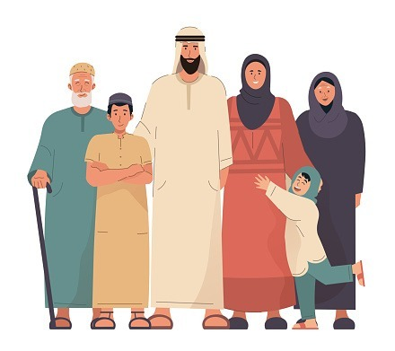

i
›
Cara Membagi Harta Warisan
Menurut Islam
Harta warisan merupakan harta bawaan dan harta bersama setelah
digunakannya untuk keperluan pewaris seperti pembayaran
hutang, pengurusan jenazah dan pemberian kepada saudara.
Dalam islam Pembagian harta warisan pun sudah ada bagiannya,
dan website ini merupakan website yang dapat digunakan untuk
mengetahui bagaimana cara menghitung warisan, dan kalkulator
penghitung warisan.
